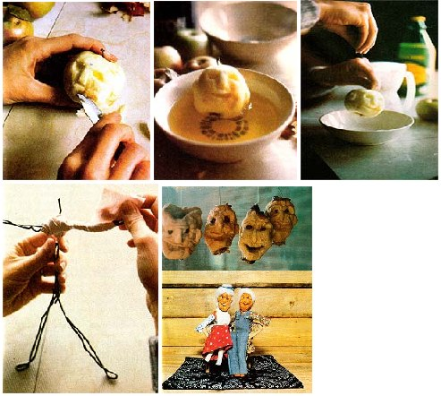

Here's an old down-home craft that's both fun and profitable!
Way back when-before the "petroleum age", large-scale technology, and mass productionlife was simple and most homesteaders lived miles from their nearest neighbors . . . so family entertainment was (by necessity) more often homespun than manufactured. Children had to invent their own games, and since cash was a scarce commodityparents made toys for their young' uns from a variety of natural materials. Well, now you can revive the spirit of those simpler days (and even make a nice profit for your efforts) by carrying on the fine old tradition of dollmaking.
Creating applehead people is an easy athome craft that requires a minimum of (lowcost) supplies . . . and-best of all -the wizened faces of the tiny dolls will entrance any child. No two of the figures turn out exactly alike, so applehead toys make unique conversation pieces and gifts, which can also be sold . . . at gift shops, craft fairs, and country produce stands.
Apple-headed dolls are part of along, fascinating history . . . one that extends back to prehistoric times, when primitive puppets appeared in ceremonial magic displays. Tribal healers in Africa and Asia often used dolls in their medicinal rituals . . . and, even today, the ancient superstition of causing sympathetic harm is preserved whenever a mob burns the stuffed figure of an unpopular person "in effigy".
Dollmaking has a rich-and innocentheritage in America, too, where the Indians taught early settlers the art of constructing such playthings from native raw materials. Corn husks and cobs were most often employed . . . as well as wood, lobster shells, nuts, twigs, and gourds. Just about any object that could be bent (or carved) into a human shape, clothed, and hugged was fair game!
The Seneca Indians were reportedly the first people to make dolls out of apples . . . but the craft was later adopted by mountaineers in Appalachia, where such handmade toys are still produced as part of the area's cottage industry. The miniature figures command a surprisingly high price, too! We've seen applehead dolls on sale in Virginia's Blue Ridge Mountains for as much as $20 each . . . which amounts to quite a tidy profit from a toy that requires an initial investment of perhaps 50 cents !
You'll need very few supplies to make your own "appleheads" . . . in fact, you probably have most of the necessary materials on hand. To get your craftwork underway, gather some apples (the larger they are, the better, because the fruit shrinks quite a bit as it dries). You'll also need a sharp paring knife, several shallow bowls, a bottle of pure lemon juice, a box of non-iodized salt, a few lightgauge coat hangers, a pair of pliers, clean strips of old bedsheets (or other rags), a supply of small cotton balls, and some scraps of cloth.
To start an apple "noggin", carefully peel the fruit . . . and then carve out the eyes, nose, mouth, and ears. Try not to whittle too deeply or too shallowly, since an evenly balanced carving will dry into a more lifelike face than will an excessively jagged form. (At this point, you might also like to cut tiny smile lines around the doll's mouth or crow's-feet beside its eyes . . . by making small creases with the point of your knife.)
Don't worry if the applehead's face still looks like a bland man-in-the-moon . . . at this stage, it reveals none of the character it will acquire during the drying process. And be sure to carve more apples than you think you may need (or want), since you'll find that some of the faces shrink into unrecognizable-and useless-shapes as they dry.
After sculpting the facial features, dip the fruit in a bowl filled with lemon juice. The citrus "bath" ( which should last about one minute) is followed by a generous sprinkling of salt ( the two natural preservatives help to cure the apple and keep it from rotting). Finally to make the doll's eyes-press two whole apple seeds into the carved sockets.
Now your doll's head is ready to be "strung up" for a drying period of two to four weeks. Unbend a big paper clip (or use a length of wire) and push it straight through the apple's core. Bend the wire at the bottom-so the fruit won't slide off -and fashion a hook at the top. Then simply hang the newcomer in a northfacing window . . . away from direct sunlight.
It's fun to watch the doll faces slowly change and develop personalities as their soft, babylike roundness "ages" into the craggy countenances of backwoods oldsters. It's really impossible to predict just what kind of expression will emerge from each apple . . . sometimes the most intricately cut features shrivel into oblivion, while a lackluster carving will often blossom into a funny face etched with crotchety character lines. (You may occasionally even see a dried apple face that resembles a friend or relative!)
In about three weeks, the appleheads will be totally free of moisture, and withered to half their original size. Take them down and give each one a thin coat of clear shellac or varnish . . . to protect the fruit from further deterioration.
Next, it's time to make each of those wrinkled old faces into a "person". Pull apart a cotton ball and glue it around the face to form a snowy halo of hair. (If you're making a "granny" doll, you might want to arrange the fuzz into a tiny bun on top of her head.)
To form the figure's body, use pliers to twist a thin coat hanger into a simple stick figure. It's a good idea to shape the limbs with a double thickness of wire (as shown in the photo), so that the little fellow-or lady-will be sturdy. Next, wrap strips of old sheets around the arms, legs, and trunk of the figure . . . to put a little "meat" on the doll's bones! (You can secure the rags on the wire form with either rubber bands or adhesive tape.)
If there's a seamstress in your family (or if you're handy with a needle yourself), you can design simple down-home clothes for the miniature figures . . . to be made from blue denim or other fabric scraps, or the usable portions of wornout garments.
Once you've dressed your "pippin people", attach a head to each body by skewering it firmly on the protruding "neck" of the stick figure. You'll also need to make hands and boots for the doll (they can be carved out of wood, or made from chunks of dried apple). And finally-to give your applehead oldsters a healthy, back-to-the-land glow-you might want to "rosy-up" their cheeks with a small brush dipped in red acrylic paint.
And that's really all there is to it, folks. It's "as easy as apple pie"-and funto make one-of-a-kind dolls . . . with no more of an investment than a few common household supplies, a bit of your spare time, and some imagination. Give one of your creations to a child iwho's bound to be delighted with it - and then give yourself a pat on the back. . . you've s just allowed the youngster to experience the old-fangled tradition . owning a homemade, natural toy.
|
CLOCKWISE FROM TOP LEFT: To make s wizened back-to-the-lender, peel a large apple, carne out miniature facial featuresbeing careful not to whittle too deeply or too shallowly-and add a few ""laugh lines"" . . . . Let the ""doll in the rough""soak for about a minute in a lemon juice bath . .. and then sprinkle the little face with non-iodized salt. The salt and citric juice will preserve the fruit .... String up your ""appleheads"" on wire to cure, and hang them in a north-facing window for a two- to fourweek drying spell .... Twist a lightgauge, doubled coat hanger into a stick figure, and wrap the form in rags to put some ""meat"" on your applehead doll's bones .... Assembled, coiffured, and dressed, these appleheads--crafted at home with SO cents' worth of suppliesrival any $20 dolls sold at gift shops. |
 |
|